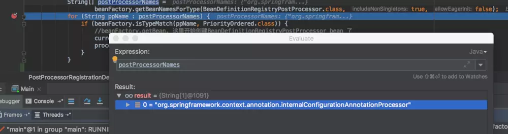
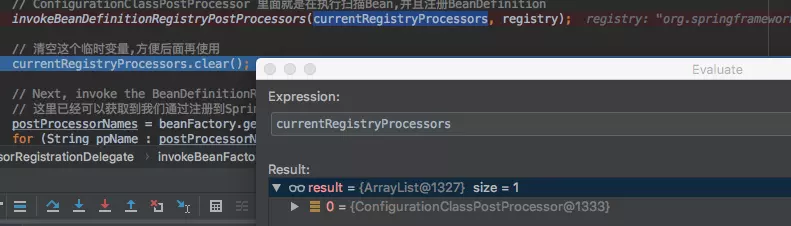
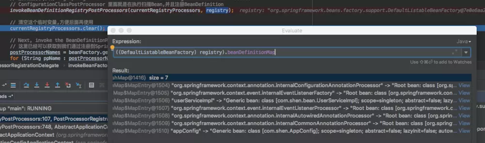
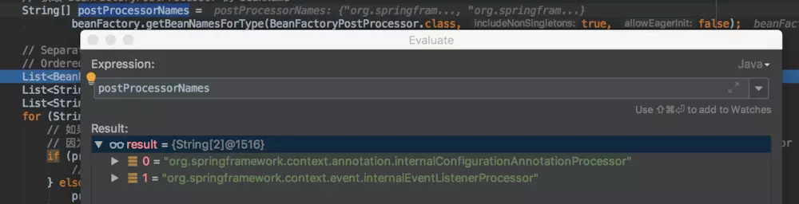

原文连接:https://www.cnblogs.com/coderxiaohei/p/11645764.html
invokeBeanFactoryPostProcessors(beanFactory);方法源码如下：
protected void invokeBeanFactoryPostProcessors(ConfigurableListableBeanFactory beanFactory) {
// getBeanFactoryPostProcessors 获取的是 this.beanFactoryPostProcessors;
//this.beanFactoryPostProcessors 只能通过 AbstractApplicationContext.addBeanFactoryPostProcessor 方法添加
PostProcessorRegistrationDelegate.invokeBeanFactoryPostProcessors(beanFactory, getBeanFactoryPostProcessors());
// Detect a LoadTimeWeaver and prepare for weaving, if found in the meantime
// (e.g. through an @Bean method registered by ConfigurationClassPostProcessor)
if (beanFactory.getTempClassLoader() == null && beanFactory.containsBean(LOAD_TIME_WEAVER_BEAN_NAME)) {
beanFactory.addBeanPostProcessor(new LoadTimeWeaverAwareProcessor(beanFactory));
beanFactory.setTempClassLoader(new ContextTypeMatchClassLoader(beanFactory.getBeanClassLoader()));
}
}getBeanFactoryPostProcessors()方法获取的是AbstractApplicationContext#beanFactoryPostProcessors这个成员变量。
这个成员变量只能通过代码中手动编码调用AbstractApplicationContext#addBeanFactoryPostProcessor方法来添加新的元素。很明显，我们这里为空。
invokeBeanFactoryPostProcessors(beanFactory)方法的主要的逻辑在PostProcessorRegistrationDelegate.invokeBeanFactoryPostProcessors方法中：
//PostProcessorRegistrationDelegate.invokeBeanFactoryPostProcessors(beanFactory, getBeanFactoryPostProcessors())源码
public static void invokeBeanFactoryPostProcessors(
ConfigurableListableBeanFactory beanFactory, List<BeanFactoryPostProcessor> beanFactoryPostProcessors) {
// Invoke BeanDefinitionRegistryPostProcessors first, if any.
Set<String> processedBeans = new HashSet<>();
if (beanFactory instanceof BeanDefinitionRegistry) {
BeanDefinitionRegistry registry = (BeanDefinitionRegistry) beanFactory;
List<BeanFactoryPostProcessor> regularPostProcessors = new ArrayList<>();
List<BeanDefinitionRegistryPostProcessor> registryProcessors = new ArrayList<>();
//beanFactoryPostProcessors是传进来里的对象,把传入的对象分类放入 BeanFactoryPostProcessor 和 BeanDefinitionRegistryPostProcessor
//BeanDefinitionRegistryPostProcessor extends BeanFactoryPostProcessor ,是一个特殊的 BeanFactoryPostProcessor
for (BeanFactoryPostProcessor postProcessor : beanFactoryPostProcessors) {
if (postProcessor instanceof BeanDefinitionRegistryPostProcessor) {
BeanDefinitionRegistryPostProcessor registryProcessor =
(BeanDefinitionRegistryPostProcessor) postProcessor;
//如果传入的beanFactoryPostProcessors是它的子类,即:BeanDefinitionRegistryPostProcessor
//则执行传入的BeanDefinitionRegistryPostProcessor的postProcessBeanDefinitionRegistry方法
registryProcessor.postProcessBeanDefinitionRegistry(registry);
registryProcessors.add(registryProcessor);
} else {
regularPostProcessors.add(postProcessor);
}
}
// Do noitialize FactoryBeans here: We need to leave all regular beans
// uninitialized to let the bean factory post-processors apply to them!
// Separate between BeanDefinitionRegistryPostProcessors that implement
// PriorityOrdered, Ordered, and the rest.
List<BeanDefinitionRegistryPostProcessor> currentRegistryProcessors = new ArrayList<>();
// First, invoke the BeanDefinitionRegistryPostProcessors that implement PriorityOrdered.
//这里只能拿到spring内部的BeanDefinitionRegistryPostProcessor,
//因为到这里spring还没有去扫描Bean,获取不到我们通过@Component标识的自定义BeanDefinitionRegistryPostProcessor
//一般默认情况下,这里只有一个,BeanName:org.springframework.context.annotation.internalConfigurationAnnotationProcessor
//对应的BeanClass:ConfigurationClassPostProcessor
String[] postProcessorNames =
beanFactory.getBeanNamesForType(BeanDefinitionRegistryPostProcessor.class, true, false);
for (String ppName : postProcessorNames) {
if (beanFactory.isTypeMatch(ppName, PriorityOrdered.class)) {
//beanFactory.getBean, 这里开始创建BeanDefinitionRegistryPostProcessor bean 了
currentRegistryProcessors.add(beanFactory.getBean(ppName, BeanDefinitionRegistryPostProcessor.class));
processedBeans.add(ppName);
}
}
//排序
sortPostProcessors(currentRegistryProcessors, beanFactory);
// registryProcessors 中放的是 BeanDefinitionRegistryPostProcessor
// 因为这里只执行eanDefinitionRegistryPostProcessor中独有的方法,而不会执行其父类即BeanFactoryProcessor的方法
// 所以这里需要把处理器放入一个集合中，后续统一执行父类的方法
registryProcessors.addAll(currentRegistryProcessors);
// 执行BeanDefinitionRegistryPostProcessor,currentRegistryProcessors中放的是spring内部的BeanDefinitionRegistryPostProcessor
// 默认情况下,只有 org.springframework.context.annotation.ConfigurationClassPostProcessor
// ConfigurationClassPostProcessor 里面就是在执行扫描Bean,并且注册BeanDefinition
invokeBeanDefinitionRegistryPostProcessors(currentRegistryProcessors, registry);
// 清空这个临时变量,方便后面再使用
currentRegistryProcessors.clear();
// Next, invoke the BeanDefinitionRegistryPostProcessors that implement Ordered.
// 这里已经可以获取到我们通过注册到Spring容器的 BeanDefinitionRegistryPostProcessor 了
postProcessorNames = beanFactory.getBeanNamesForType(BeanDefinitionRegistryPostProcessor.class, true, false);
for (String ppName : postProcessorNames) {
// 之前优先处理的是实现PriorityOrdered接口的,而PriorityOrdered接口也实现了Ordered接口
// 所有这里需要把之前已经处理过的给过滤掉
if (!processedBeans.contains(ppName) && beanFactory.isTypeMatch(ppName, Ordered.class)) {
//之前这个临时变量已经被清空了,现在又开始放东西了
currentRegistryProcessors.add(beanFactory.getBean(ppName, BeanDefinitionRegistryPostProcessor.class));
processedBeans.add(ppName);
}
}
//排序
sortPostProcessors(currentRegistryProcessors, beanFactory);
registryProcessors.addAll(currentRegistryProcessors);
// 执行BeanDefinitionRegistryPostProcessor
invokeBeanDefinitionRegistryPostProcessors(currentRegistryProcessors, registry);
//清空临时变量
currentRegistryProcessors.clear();
// Finally, invoke all other BeanDefinitionRegistryPostProcessors until no further ones appear.
boolean reiterate = true;
while (reiterate) {
reiterate = false;
postProcessorNames = beanFactory.getBeanNamesForType(BeanDefinitionRegistryPostProcessor.class, true, false);
for (String ppName : postProcessorNames) {
//执行没有实现Ordered接口的BeanDefinitionRegistryPostProcessor
if (!processedBeans.contains(ppName)) {
currentRegistryProcessors.add(beanFactory.getBean(ppName, BeanDefinitionRegistryPostProcessor.class));
processedBeans.add(ppName);
reiterate = true;
}
}
sortPostProcessors(currentRegistryProcessors, beanFactory);
registryProcessors.addAll(currentRegistryProcessors);
invokeBeanDefinitionRegistryPostProcessors(currentRegistryProcessors, registry);
currentRegistryProcessors.clear();
}
// Now, invoke the postProcessBeanFactory callback of all processors handled so far.
// List<BeanDefinitionRegistryPostProcessor> registryProcessors
// 之前已经执行过BeanDefinitionRegistryPostProcessor独有方法,现在执行其父类方法
invokeBeanFactoryPostProcessors(registryProcessors, beanFactory);
// List<BeanFactoryPostProcessor> regularPostProcessors
// 执行 BeanFactoryPostProcessor 方法
invokeBeanFactoryPostProcessors(regularPostProcessors, beanFactory);
} else {
// Invoke factory processors registered with the context instance.
invokeBeanFactoryPostProcessors(beanFactoryPostProcessors, beanFactory);
}
// Do not initialize FactoryBeans here: We need to leave all regular beans
// uninitialized to let the bean factory post-processors apply to them!
// 获取 BeanFactoryPostProcessor 的 beanName
String[] postProcessorNames =
beanFactory.getBeanNamesForType(BeanFactoryPostProcessor.class, true, false);
// Separate between BeanFactoryPostProcessors that implement PriorityOrdered,
// Ordered, and the rest.
List<BeanFactoryPostProcessor> priorityOrderedPostProcessors = new ArrayList<>();
List<String> orderedPostProcessorNames = new ArrayList<>();
List<String> nonOrderedPostProcessorNames = new ArrayList<>();
for (String ppName : postProcessorNames) {
// 如果已经被执行过了,就不在执行
// 因为一开始先获取的BeanDefinitionRegistryPostProcessor,而BeanDefinitionRegistryPostProcessor继承了BeanFactoryPostProcessor
if (processedBeans.contains(ppName)) {
// skip - already processed in first phase above
} else if (beanFactory.isTypeMatch(ppName, PriorityOrdered.class)) {
priorityOrderedPostProcessors.add(beanFactory.getBean(ppName, BeanFactoryPostProcessor.class));
} else if (beanFactory.isTypeMatch(ppName, Ordered.class)) {
orderedPostProcessorNames.add(ppName);
} else {
nonOrderedPostProcessorNames.add(ppName);
}
}
// First, invoke the BeanFactoryPostProcessors that implement PriorityOrdered.
// 根据不同的优先级,按序执行 BeanFactoryPostProcessor
sortPostProcessors(priorityOrderedPostProcessors, beanFactory);
invokeBeanFactoryPostProcessors(priorityOrderedPostProcessors, beanFactory);
// Next, invoke the BeanFactoryPostProcessors that implement Ordered.
List<BeanFactoryPostProcessor> orderedPostProcessors = new ArrayList<>();
for (String postProcessorName : orderedPostProcessorNames) {
orderedPostProcessors.add(beanFactory.getBean(postProcessorName, BeanFactoryPostProcessor.class));
}
sortPostProcessors(orderedPostProcessors, beanFactory);
invokeBeanFactoryPostProcessors(orderedPostProcessors, beanFactory);
// Finally, invoke all other BeanFactoryPostProcessors.
List<BeanFactoryPostProcessor> nonOrderedPostProcessors = new ArrayList<>();
for (String postProcessorName : nonOrderedPostProcessorNames) {
nonOrderedPostProcessors.add(beanFactory.getBean(postProcessorName, BeanFactoryPostProcessor.class));
}
invokeBeanFactoryPostProcessors(nonOrderedPostProcessors, beanFactory);
// Clear cached merged bean definitions since the post-processors might have
// modified the original metadata, e.g. replacing placeholders in values...
beanFactory.clearMetadataCache();
}源码超级长，我们慢慢来看。
Spring容器使用的
BeanFactory是DefaultListableBeanFactory，它实现了BeanDefinitionRegistry接口，if条件成立。优先处理程序传进来的
beanFactoryPostProcessors，也就是我们手动调用AbstractApplicationContext#addBeanFactoryPostProcessor方法来添加的BeanFactoryPostProcessor。BeanFactoryPostProcessor是一个顶级接口，他还有一个子类BeanDefinitionRegistryPostProcessor。在该方法中声明了两个List来存放BeanFactoryPostProcessor和BeanDefinitionRegistryPostProcessor，以便控制这两个接口方法的执行。遍历传入的
List<BeanFactoryPostProcessor> beanFactoryPostProcessors，将其分类放到两个List中。如果传入的是BeanDefinitionRegistryPostProcessor类，则先执行BeanDefinitionRegistryPostProcessor类中独有的方法postProcessBeanDefinitionRegistry方法。当然，我们这里传入的List<BeanFactoryPostProcessor> beanFactoryPostProcessors为空。第一次执行
beanFactory.getBeanNamesForType(BeanDefinitionRegistryPostProcessor.class, true, false);方法，从容器中获取BeanDefinitionRegistryPostProcessor类型的Bean的name（这里只是获取名称，还没有实例化Bean）。注意，程序执行到这里，Spring还没有扫描包，还没有将项目中的Bean注册到容器中。默认情况下，这里返回的数据为如下图所示。回忆一下，这个BeanDefinition是在什么时候被加入到BeanFactory的呢？是在AnnotationConfigApplicationContext的无参构造器中创建reader时注册的BeanDefinition。其中BeanName为org.springframework.context.annotation.internalConfigurationAnnotationProcessor，对应的Class为org.springframework.context.annotation.ConfigurationClassPostProcessor。遍历这个获取的
postProcessorNames，如果实现了PriorityOrdered接口，就调用beanFactory.getBean(ppName, BeanDefinitionRegistryPostProcessor.class)方法，从容器中获取这个Bean，将其加入到临时变量List<BeanDefinitionRegistryPostProcessor> currentRegistryProcessors中。对
currentRegistryProcessors中的元素进行排序，然后执行BeanDefinitionRegistryPostProcessor中的特有方法postProcessBeanDefinitionRegistry。注意哦，这里没有执行其父类的方法，而是又将其放到List<BeanDefinitionRegistryPostProcessor> registryProcessors中，到后面再执行其父类方法。默认情况下，此时
currentRegistryProcessors中只有一个Bean即：org.springframework.context.annotation.ConfigurationClassPostProcessor（它实现了PriorityOrdered接口）。ConfigurationClassPostProcessor是一个非常重要的类，我们后面在讲。当程序执行完ConfigurationClassPostProcessor的BeanDefinitionRegistryPostProcessor方法后，我们程序中的Bean就被注册到了Spring容器中了，需要注意的是，这里还只是注册了BeanDefinition，还没有创建Bean对象。
当第二次执行
postProcessorNames = beanFactory.getBeanNamesForType(BeanDefinitionRegistryPostProcessor.class, true, false);方法，此时因为之前已经完成了Bean的扫描，所以如果我们有自定义的BeanDefinitionRegistryPostProcessor就可以在这里被获取了。获取之前，判断其是否实现Ordered接口，并且之前没有被执行过，则调用getBean方法，从容器中获取该Bean，然后进行排序，执行postProcessBeanDefinitionRegistry方法。前面已经按顺序执行了实现
PriorityOrdered和Ordered接口的BeanDefinitionRegistryPostProcessor，最后，执行没有实现Ordered接口的BeanDefinitionRegistryPostProcessor的postProcessBeanDefinitionRegistry方法。执行完之后再BeanDefinitionRegistryPostProcessor的父类方法postProcessBeanFactory。获取容器中还没有被执行过的实现
BeanFactoryPostProcessor接口的Bean，然后按顺序执行的postProcessBeanFactory。默认情况下，这里会获取到：

由于Bean org.springframework.context.annotation.internalConfigurationAnnotationProcessor（对应的Class为org.springframework.context.annotation.ConfigurationClassPostProcessor）在之前已经被执行了，这里只会执行Bean org.springframework.context.event.internalEventListenerProcessor（对应的Class为org.springframework.context.event.EventListenerMethodProcessor）的postProcessBeanFactory方法，源码如下：
//org.springframework.context.event.EventListenerMethodProcessor#postProcessBeanFactory 源码
@Override
public void postProcessBeanFactory(ConfigurableListableBeanFactory beanFactory) {
this.beanFactory = beanFactory;
Map<String, EventListenerFactory> beans = beanFactory.getBeansOfType(EventListenerFactory.class, false, false);
List<EventListenerFactory> factories = new ArrayList<>(beans.values());
AnnotationAwareOrderComparator.sort(factories);
this.eventListenerFactories = factories;
}未完待续......
源码学习笔记：https://github.com/shenjianeng/spring-code-study
欢迎关注公众号：